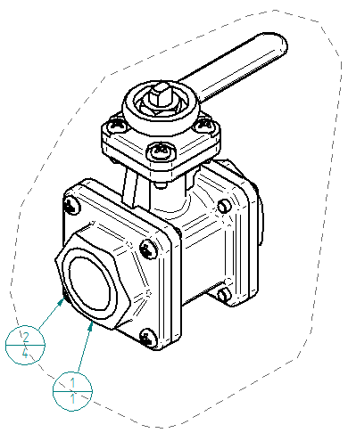
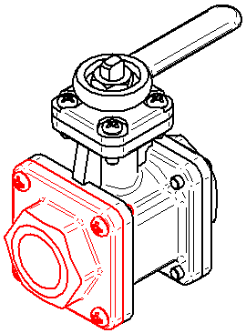

Create a subassembly parts list
Use the Select Subassembly dialog box to place a parts list for a subassembly instead of a top level assembly. The item numbers and balloons are based on the selected subassembly.
This technique produces a parts list with item numbers that are the same in Solid Edge and in Teamcenter.

|
Item Number |
File Name (no extension) |
Quantity |
|
1 |
SideFlange |
1 |
|
2 |
ScrewM8 |
4 |
If you already have a parts list on the drawing, turn off the Link To Active  option before continuing.
option before continuing.
-
Choose Home tab→Tables group→Parts List
 .
. -
On the drawing sheet, select a drawing view of an assembly that contains one or more subassemblies.
-
On the Parts List command bar, set the following:
-
Auto-Balloon
 =On
=On -
Place List
 =On
=On
-
-
On the command bar, click From Selected Subassembly
 .
. -
In the Select Subassembly dialog box, in the Parts pane, select the subassembly for which you want to create a parts list.
The matching geometry is highlighted in the drawing view.
Example:Subassembly SideFlange01.asm is selected.

-
Click OK to continue.
-
Move the cursor to position the parts list, and then click to place it.
The resulting subassembly parts list and item balloons are added to the drawing view, as shown in the image at the top of this page.
-
If item numbers were created in the assembly, you can reuse them in a subassembly parts list. Using item numbers from the assembly document ensures the parts list item numbers do not change unless the model changes.
-
To reuse item numbers, select the Use assembly generated item numbers check box on the Options tab in the Parts List Properties dialog box.
-
To set this as a default option, create a Saved Settings name that includes Use assembly generated item numbers check box. For more information, see Saving and reusing the parts list format.
-
-
The dashed-line shape that appears around the drawing view is associated with the ballooned parts list. If you do not want to show it, select the shape and press Delete. You also can prevent the shape from appearing by clearing the Create alignment shape check box on the Balloon tab in the Parts List Properties dialog box before you click to place the parts list.
-
To show and hide parts in the selected subassembly, you can use the options on the List Control tab in the Parts List Properties dialog box. The Show top level assembly in list option refers to the selected subassembly, not the top level assembly model.
How do I
Create a parts listCreate an exploded parts list
Create a total length parts list
Create a parts list for flexible hoses and tubing
Create a family of assemblies parts list
Exclude parts from an exploded parts list
Open a model from a parts list
Example: Show custom occurrence properties in a parts list
Example: Show custom properties and materials in a parts list
Example: Show sheet metal material thickness in a parts list
Renumber a parts list
Change the active parts list
Display assembly occurrences in a drawing view or parts list
Convert a parts list to a table
Copy a parts list to the clipboard
Learn more
Parts listsFamily of Assemblies (FOA) parts lists
Assembly part views and parts lists
Subassembly drawing views and parts lists
Exploded parts lists
Custom occurrence properties in parts lists
Occurrence quantity overrides in parts lists
Item numbers in parts lists
Saving and reusing the parts list format
Look up more details
Parts List commandParts List command bar
Parts List Properties dialog box
Copy Contents command
Convert To Table command